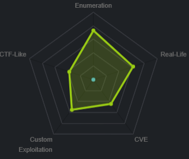

Linux Boxes
lightweight
nmapAuto
nmap vulns
ldap
ldapsearch with DC
passwords
$6$x module
http
info.php
status.php
user.php
ssh
/etc/passwd
LinEnum
report
wireshark
tcpdmp
lightweight.ens33.cap
refresh all the webpages and intercept LDAP packets
privesc to ldapuser2
privesc to ldapuser1
7z2John
hashcat the 7z2john hash
unzip 7z w/ pass
status.php
privesc
privesc to root
gtfo bins openssl
testing openssl to view /etc/shadow
privesc via sudoers config file
user/root
lessons learned
lightweight
